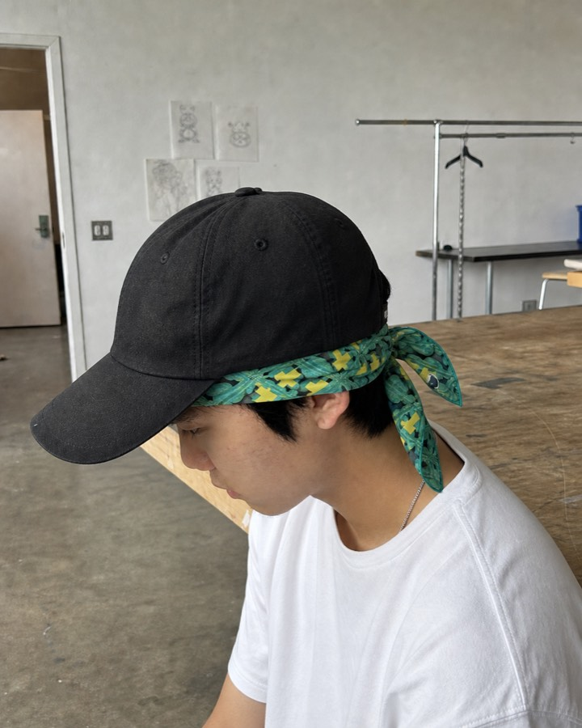
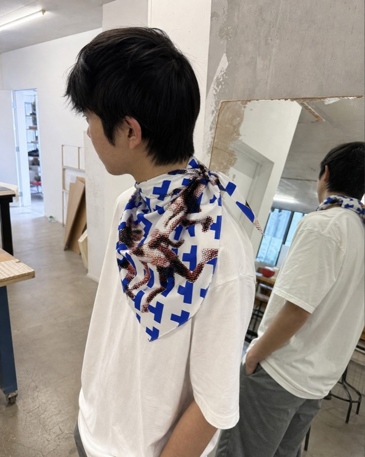
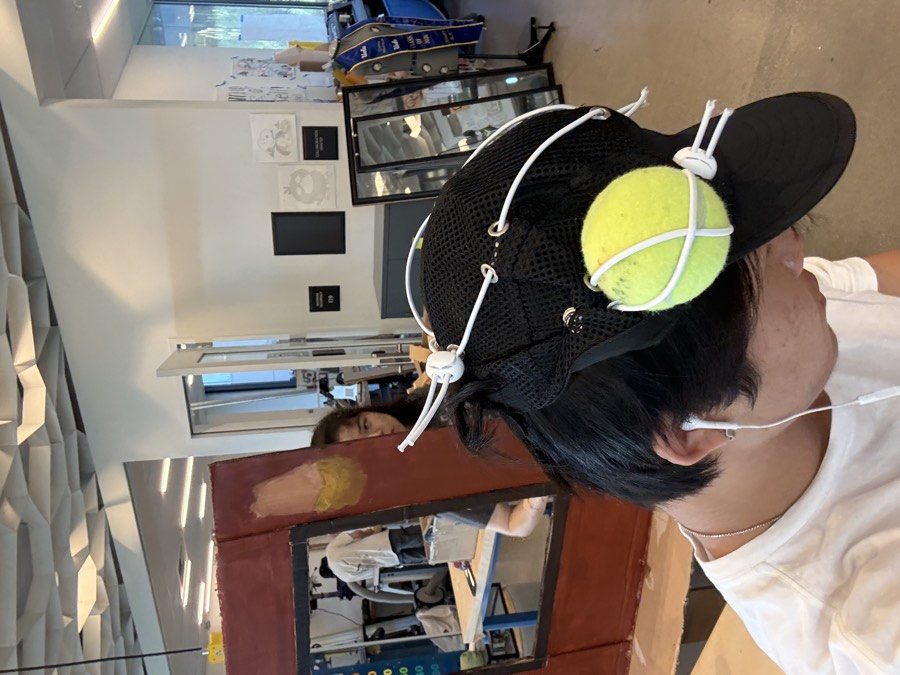
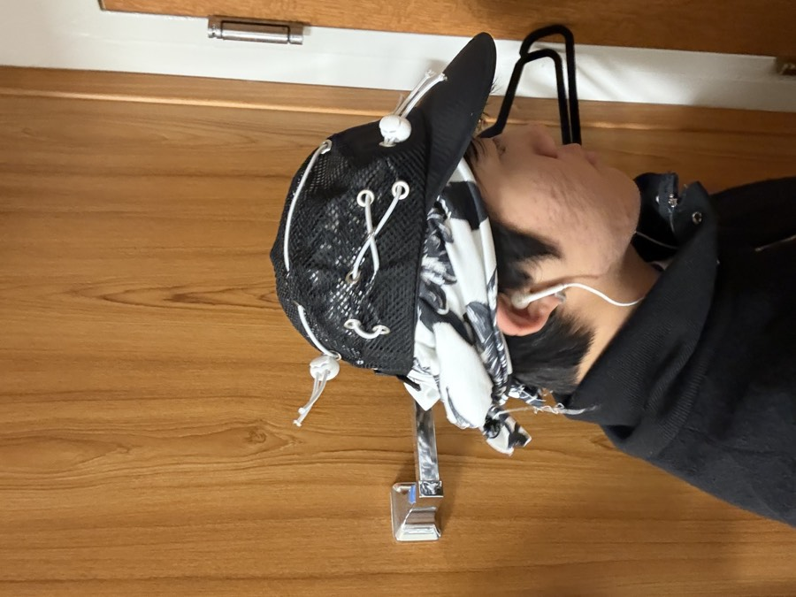
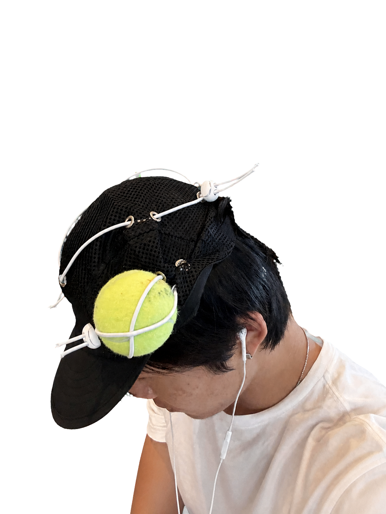
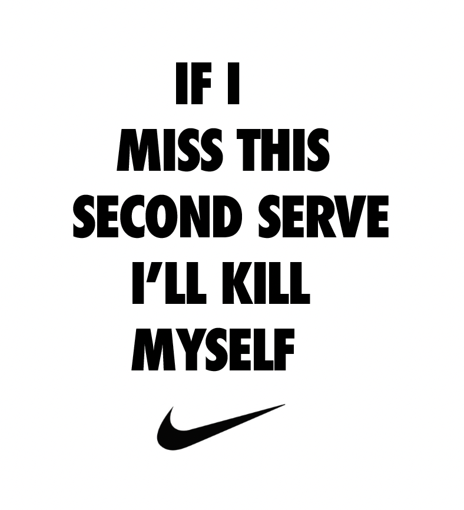

BANDANA 01 / RECURSION


01UCLA / FAST RUNWAY


02BANDANAS / RAW → WORN
BANDANA 01 / RECURSION

BANDANA 02 / MOVEMENT


03WHAT TOM WANTS TO LEARN / LOS ANGELES · SEPTEMBER 17
MAKE REAL SAMPLES WITH MIKE
UNIVERSAL TENNIS / JERRY’S PROOF OF CONCEPT
04TENNIS-BALL CAP / PROTOTYPE



05IF I MISS THIS SECOND SERVE / TEE ARTWORK
